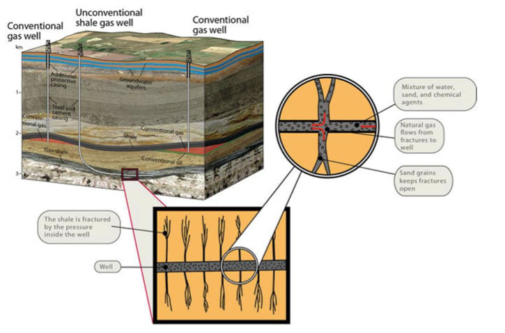
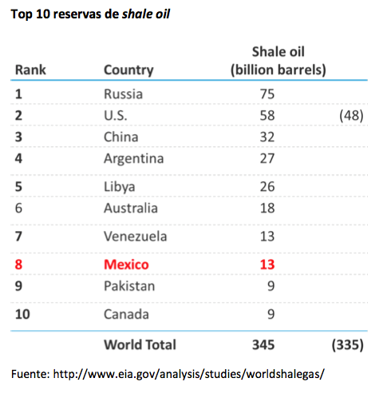
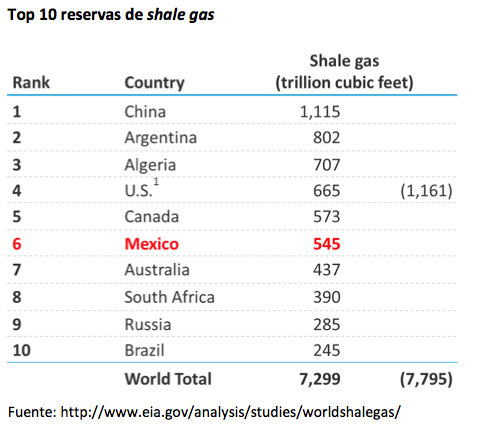
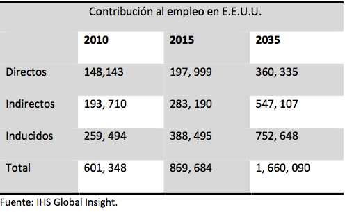
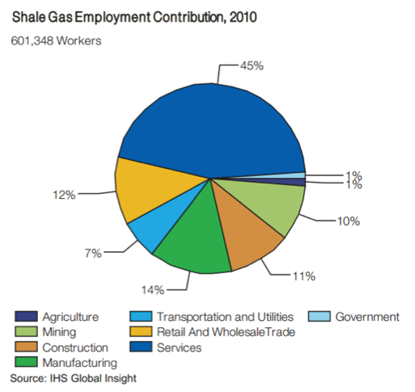
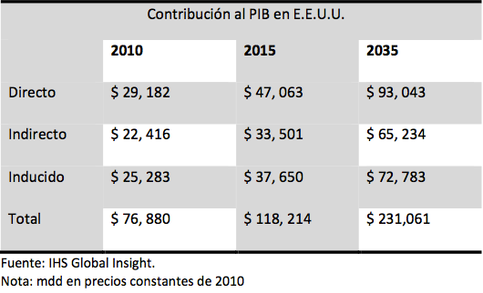
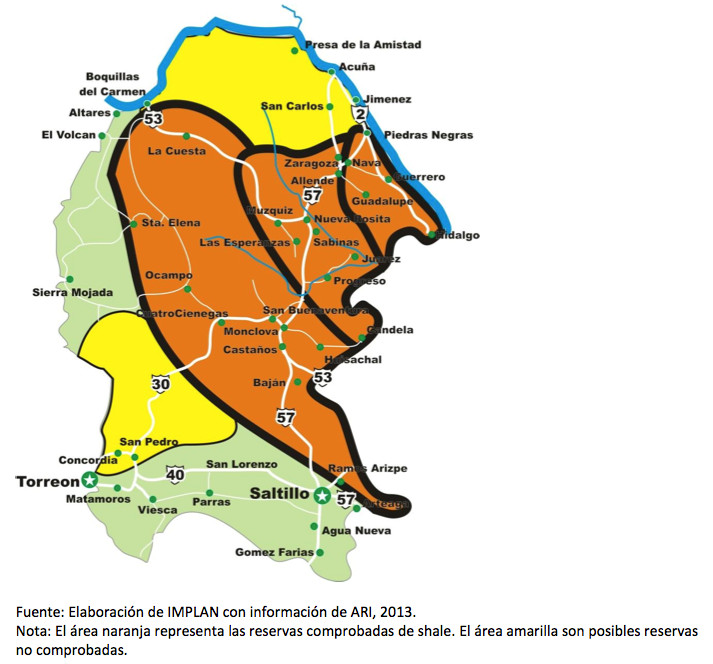

El gas shale es un gas natural obtenido de rocas sedimentarias (lutitas) de baja permeabilidad. Se considera un gas no convencional por requerir métodos de extracción más complejos.
El método utilizado para su extracción es el Hydraulic Fracturing, que consiste en la fractura de la piedra por medio de una mezcla de agua, químicos y minerales introducida a presión en el pozo. A esta mezcla le llaman lodo y los granos y minerales que contiene mantienen abiertas las fracturas de la piedra para dejar escapar el gas hacia el pozo.
Reservas nacionales y posible impacto en la economía
La extracción de este gas natural se contempla en el futuro cercano de México, pues además de contar con una de las reservas más grandes del mundo, el gas shale ha contribuido positivamente en la economía de los países que lo utilizan.
Según datos de la Agencia Internacional de Energía, México se encuentra en el Top 10 de reservas internacionales tanto de gas como aceite shale. Nuestro país concentra el 3.76% y 7.46% de las reservas internacionales de aceite y gas shale respectivamente:
 En cuanto al impacto económico, éste se da en el empleo, el PIB, la macroeconomía y la Industria, y tiene tres alcances:
- Directo: es el impacto generado por las actividades propias para la extracción y producción del gas shale.
- Indirecto: contribución creada por los productos y servicios de apoyo en la cadena de suministros del gas shale.
- Inducido: crecimiento desarrollado por la derrama económica de las actividades directas e indirectas.
Tanto las contribuciones indirectas como inducidas son mayores a la contribución directa a la economía. En la siguiente tabla se muestran los empleos creados por la industria del gas Shale en Estados Unidos en el 2010, así como los empleos esperados para el 2015 y 2035.
Como se observa, los empleos inducidos se generan en mayor cantidad. Esto se debe a que el multiplicador del empleo de la industria shale es superior al de otras industrias manufactureras, al sector financiero y al de construcción.
Por cada empleo directo generado por la industria Shale, se crean más de 3 empleos entre indirectos e inducidos. Dos factores contribuyen al multiplicador:
- La fuerte inversión de capital en la cadena de suministros doméstica.
- La naturaleza tecnológica e innovadora del sector shale crea trabajos de calidad y mejor remunerados que el promedio ($28.30 dls/hr).
El total de la contribución al empleo por la industria del shale tuvo la siguiente distribución en 2010:
La gráfica muestra cómo el sector de servicios es el más beneficiado por la industria del shale, pues la mayoría de los empleos inducidos se encuentran precisamente en él.
En el caso de la contribución al Producto interno Bruto el impacto inducido es también mayor y se espera que la contribución total al PIB crezca 44.62% y 90.88% para los años 2015 y 2035 respectivamente.
En cuanto a los Impactos en la industria y la macroeconomía, el primero se da debido a los bajos precios del gas utilizado como insumo o para la creación de energía y el segundo es una consecuencia del crecimiento en el empleo y la producción.
¿Cómo prepararnos?
En caso de iniciarse la extracción del shale, la ubicación de las reservas ofrece a La Laguna la oportunidad de beneficiarse de forma indirecta e inducida participando en la cadena de suministros de bienes y servicios para las actividades directas de exploración, extracción y producción. El siguiente mapa ilustra las reservas en el estado de Coahuila:
Es entonces importante para nuestra región prepararse con mano de obra calificada en química, eléctrica y metalurgia, entre otras, para participar en la cadena de suministro de la industria shale y utilizar los bajos costos de la energía generada de este gas natural como ventaja competitiva en otros sectores.